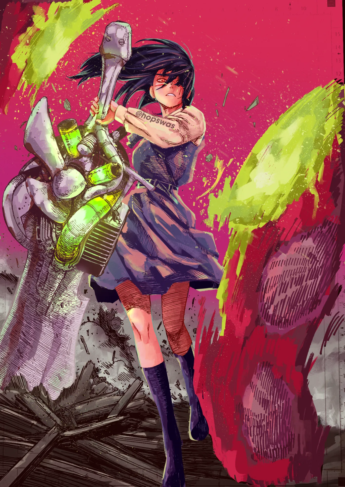

About Me
I'm Brayden Brezden, a first-year student in the Information Technology and Applied Systems (ITAS) program at Vancouver Island University in Nanaimo. I'm working toward a job on a cyber-security development team, and I plan to earn CompTIA Security+ on the way. Outside of class, I colour manga. I picked it up during lockdown, and now I colour pages in Krita, Clip Studio Paint and Procreate. My favourite series to colour is Jujutsu Kaisen.
Skills
- HTML and CSS
- Digital colouring
- 3D scenes with AI

Projects
-
This portfolio site
I built this site for my ITAS 191 web design course, in HTML and CSS, with Claude Code helping set up the structure. It has a manga look I chose: a "Sakura ink" palette, Dela Gothic One headings and screentone dots in the header. It's built phone-first, and I checked every colour pair for contrast. The hardest part was the 3D scene.
-
The 3D drawing tablet
The 3D tablet in About Me stands for my manga colouring, and it looks like the tablet I colour on. Claude wrote it in Three.js from a brief I wrote, and then I directed two changes: propping the tablet up with a colouring app on its screen, and having the pink stylus colour a panel in. It stays still for visitors whose computer is set to reduce motion.
-
Manga colourings
I colour manga line art digitally in Krita, Clip Studio Paint and Procreate. The page in About Me is Yukinobu Tatsu's Chainsaw Man fan art, which I coloured with acid-green slashes across a hot pink sky. A page takes me about 5 to 6 hours, sometimes more. I post my colourings on X as @hopswas.
Contact
- Email: brayden.itas@gmail.com
- GitHub: github.com/Brayden-Brezden